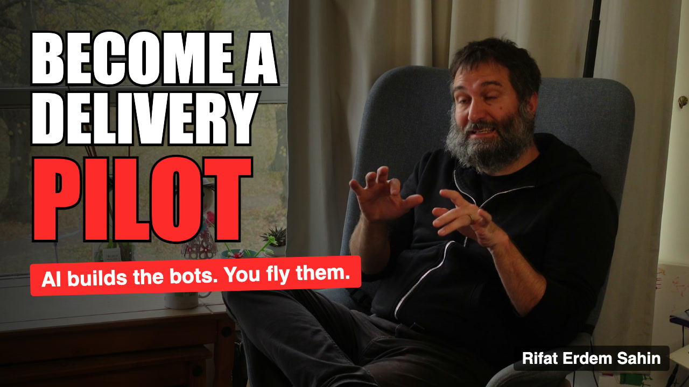
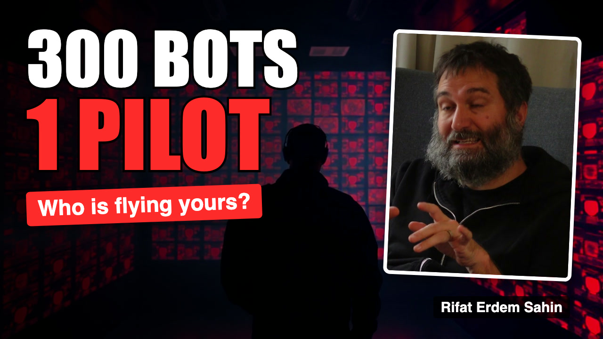

Become a Delivery Pilot: the AI interview kit
▶️ Watch on YouTube 💼 See the LinkedIn post ✖️ See the X post
Rifat Erdem Sahin in conversation with Marianna. Everything below was produced by an AI-assisted pipeline: Whisper transcript, AI-chosen chapters and cuts, Remotion edit, fal.ai visuals.

25:49
final video (Combined)14
chapters incl. highlights159 s
duplicated ideas removedv0.14.0
project versionCopy and publish
▶️ YouTube
title, description, chapters, tags, thumbnail 💼 LinkedIn
long and short post ✖️ X
single posts and a thread 🎬 Workflow
how the video is produced, stage by stage ✅ Checklist
every step, ticked or not 🖼️ Thumbnails
A/B/C test plan 💸 Costs
what this cost, and how
title, description, chapters, tags, thumbnail 💼 LinkedIn
long and short post ✖️ X
single posts and a thread 🎬 Workflow
how the video is produced, stage by stage ✅ Checklist
every step, ticked or not 🖼️ Thumbnails
A/B/C test plan 💸 Costs
what this cost, and how
Downloads
Thumbnail Subtitles (.srt) Description (.txt)
Thumbnail versions

v1 generic

v2 curiosity (current)
Chapters
| 0:00 | Highlights |
| 0:52 | Introduction |
| 1:22 | Why a Delivery Pilot? |
| 2:38 | 40 Years of Technology: From Atari to AI |
| 3:57 | From Rider to Driver to Pilot |
| 5:14 | The Three Levels of AI Skills |
| 7:15 | The Journey to Pilot Level |
| 9:16 | Chatbots, Agents and Bots Explained |
| 13:35 | Do We Still Need to Learn Coding? |
| 16:10 | Continuous Learning and Adult Education |
| 17:23 | Teaching, Gatekeepers and the Future of Work |
| 20:51 | Adapting the Mind and Self-Learning |
| 22:45 | Cambridge Workshops and the Skool Community |
| 24:46 | "AI Isn't for Me" and the Bigger Picture |
Project
Repository · Timeline · Decisions · Changelog · README and flow diagram
v0.14.0 · built from the project data by scripts/13_build_site.py · source